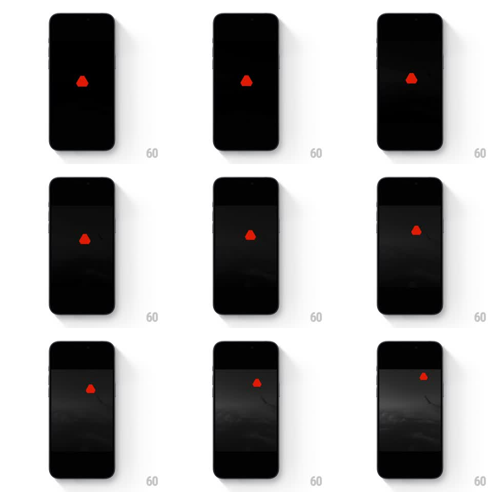

Media
Frame-by-frame

Rebuild this interaction 1:1: AgBr's film-emulation picker - a horizontal strip of film-stock chips under a live B&W preview, swiping changes the emulation in real time, and the strip ends in a red paywall sheet.

Rebuild this interaction 1:1: AgBr's film-emulation picker - a horizontal strip of film-stock chips under a live B&W preview, swiping changes the emulation in real time, and the strip ends in a red paywall sheet.
## Integration
Integration: stack-agnostic spec - springs given as stiffness/damping, timed motions as duration + curve; map every value to your framework and animation library of choice.
## Scene
AgBr camera/editor, black with a red logo dot top right: a fullscreen grainy B&W photo preview; at the bottom a horizontal chip strip of film stocks (KTX, AC5, AX4, IH5, O15, FN4...) above a control row (timer, Density, Pull/Push). The paywall: a full red sheet - "Ag / Br" headers, feature lines ("1 - Time Purchase", "1 App - 3 Platforms", "All Future Features FREE"), and "Buy ₹1,499" pricing.
## Motion spec
Pattern: horizontal preset pager with live filter application and a paywall finale.
- The chip strip scrolls 1:1 with the drag; on release it snaps the nearest chip to center (spring ~350/22).
- The centered chip inverts (dark chip / light text) as it takes focus; neighbors stay outline-style - state interpolates with distance from center, not on snap.
- The preview's emulation changes with the strip position: contrast/grain/tone tween continuously as you drag (crossfade between adjacent stocks' LUTs), settling 200ms after the snap.
- The film-stock name fades into the preview's corner briefly on change (500ms hold, fade out 300ms).
- Flicking past the last stock drags the red paywall sheet up from the bottom (rubber-banded until threshold, then it springs up to full, ~300/20); swiping it down dismisses.
## Calibration
- Every stock visibly changes the photo - the tween must be perceptible mid-drag, not only after snap.
- The red paywall is total: full-bleed red, black type, no imagery.
## Reduced motion
Chips snap without scroll physics; filter crossfades (250ms); paywall slides up linearly (300ms).
## Don't miss
- The grain animates subtly in the preview (film grain shimmer) - the emulation is a living stock, not a static filter.
- The chip strip is flickable with momentum and the snap is crisp - no mushy deceleration.